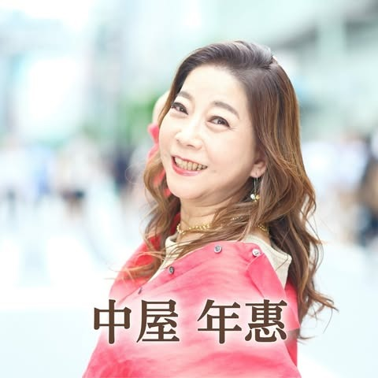

質問の質が変わると、
人生が変わる

中屋年惠さん 金運アップ姓名鑑定師「行動目標が明確になり、後回しの癖が解消！」
2週間に1度のペースで現状の問題と向き合えるようになり、後回しにする癖が劇的に改善されました。
 島田悠次さん
カタカナ英語ディレクター
島田悠次さん
カタカナ英語ディレクター
「人に言えない悩みも吐き出せ、軌道修正が早くなった」
AIカマヤンに気軽に打ち明けることで、自ら軌道修正の答えを導き出せるようになりました。
渡邉美貴さん
4児ママ起業コーチ
「落ち込む期間が短縮され、行動スピードが劇的にUP」
入会前は感情に振り回され、思考が止まっていました。AIカマヤンを鏡にすることでフラットな状態へすぐ戻れるようになりました。